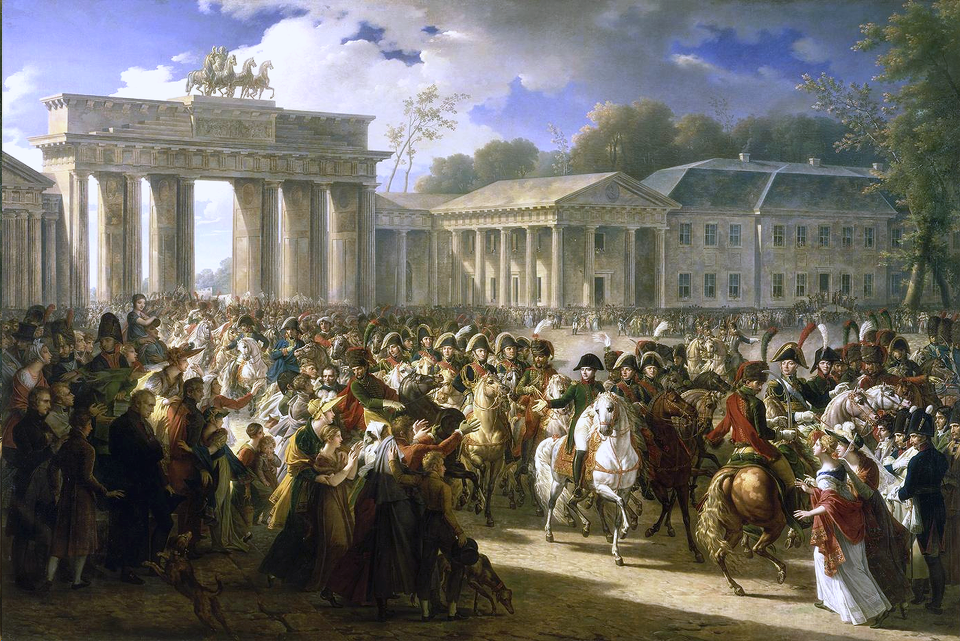
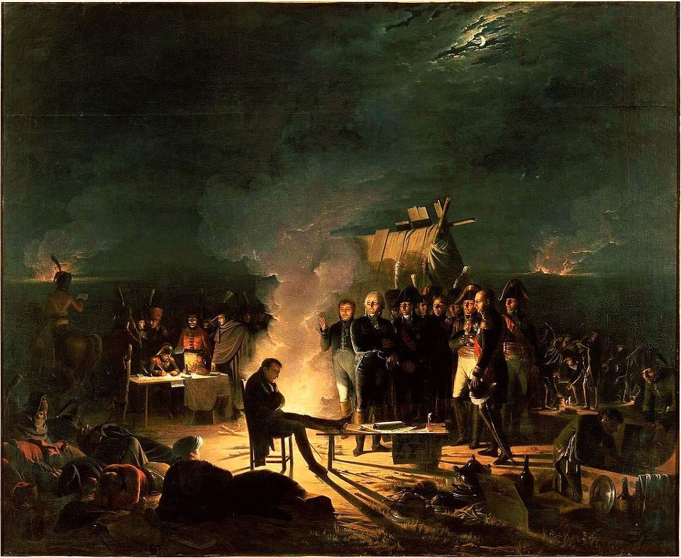

스톡홀름의 프랑스 왕 (6편) - 세상 억울한 사나이
게시: 2018-08-02T06:30:00+09:00
1806년, 상황 판단 능력이 떨어지던 프로이센 국왕 빌헬름 3세(Friedrich Wilhelm III)가 겁도 없이 나폴레옹에게 도전한 제4차 대불동맹전쟁에서 프로이센은 건국이래 최대의 위기를 맞이 했습니다. 특히 10월 14일은 아마 프로이센 역사상 최악의 날이었을 것입니다. 프로이센 전체 야전군이라고 할 수 있는 12만 대군이 예나와 아우어슈타트에서 하루 아침에 산산조각 났거든요. 프로이센에게는 특히 아우어슈테트 전투가 뼈 아픈 상처가 되었습니다. 6만의 프로이센 대군이 불과 2만7천 밖에 안 되는 다부(Louis Nicolas Davout) 원수의 프랑스군 제3 군단에게 박살이 났으니까요.

(예나-아우어슈테트 전투에서 프로이센을 박살낸 나폴레옹이 베를린에 입성할 때, 놀랍게도 베를린 시민들은 이 정복자에게 환호를 보냈다고 합니다. 이에 대해서는 프로이센의 귀족들은 물론, 프랑스군조차도 놀랐다고 합니다.)
하지만 아우어슈테트 전투를 언짢게 생각한 것은 꼭 프로이센 사람들만은 아니었습니다. 같은 날 예나에서 호헨로헤 대공이 지휘한 프로이센군을 격파한 나폴레옹도 이 전투가 내심 불쾌했습니다. 먼저, 나폴레옹은 영광을 부하들과 나눠 갖는 스타일이 아니었습니다. 그는 하필 같은 날, 자신의 심복인 다부가 더 적은 병력으로 더 빛나는 승리를 거둔 것이 기쁘면서도 그리 상쾌하지만은 않았습니다. 게다가, 다부가 1대2의 절대적으로 불리한 상황에서 싸워야 했다는 자체가 자신의 큰 판단 미스를 그대로 드러내보이는 일이다보니, 나폴레옹은 체면이 서지가 않았습니다. 원래 나폴레옹의 스타일은 결코 여포처럼 일당백의 용기를 발휘하여 더 적은 병력으로 적의 대군을 때려부수는 것이 아니었습니다. 비록 전체 병력 수는 적이 더 많다고 하더라도, 면밀한 정보 수집과 냉철한 상황 판단, 그리고 현란한 풋워크를 통해 정작 실제 전투에 참여하는 병력은 언제나 프랑스군이 조금 더 많도록 만드는 것이 나폴레옹의 장기였습니다. 그러다보니, 그가 지휘하는 전투에서 1대2의 수적 열세를 안고 프랑스군이 전투에 돌입해야 했다는 사실 자체가 그의 명성에 흠을 내는 것이었습니다. 그는 예나 전투를 완승으로 마무리한 그 다음날 새벽까지도, 자신이 호헨로헤 대공의 지원군이 아니라 프로이센군 주력 전체와 맞붙어 싸워이긴 줄 알고 우쭐해 있었습니다. 그런데 그 날 아침 다부로부터 온 전령이 빌헬름 3세 본인과 브라운슈바이크 공작이 지휘하는 프로이센군 6만을 다부의 제3 군단 혼자서 무찔렀다는 아우어슈테트 전투의 승전보를 가져오자, 나폴레옹은 "자네 원수께서 헛것을 보신 모양"이라고 비웃을 정도였습니다.
그러나 곧 사실이 드러나자, 나폴레옹의 입장은 몹시까지는 아니어도 살짝 난처해졌습니다. 부하들에게 체면이 서지 않았던 나폴레옹은 곧 그의 실책을 뒤집어 씌울 희생양을 찾아냅니다. 바로 제1 군단장 베르나도트였습니다. 원래 전투 직전, 다부와 베르나도트는 함께 나움부르크(Naumburg) 근처까지 진격해있었습니다. 그때 나폴레옹에게 호헨로헤의 프로이센군이 포착되자, 이를 프로이센군 본대라고 착각했던 나폴레옹은 다부와 베르나도트에게 각각 별도의 명령서를 내립니다. 다부에게 호헨로헤의 퇴로를 끊기 위해 예나의 북서쪽인 아폴다(Apolda)로 내려와 포위망을 틀어막으라는 명령을 내린 것까지는 좋았는데, 베르나도트에게 내린 명령이 약간 애매모호한 것이었습니다. "만약 다부와 함께 나움부르크에 있다면 다부와 함께 아폴다로 가되, 만약 도른부르크에 있다면 뮈라와 합류하여 예나 방향으로 내려오라. 내가 선호하는 것은 베르나도트가 이미 도른부르크에 도달한 상태라서, 예나에서 곧 벌어질 란의 전투를 지원해주었으면 하는 것이다" 라는 것이었지요. 이미 도른부르크에 주둔하고 있던 베르나도트는 성실히 그 명령에 따라 10월 14일 아침에 예나 방향으로 내려오고 있었습니다.
바로 그때 아우어슈테트 방향에서 맹렬한 포격 소리가 들려왔습니다. 이는 베르나도트를 포함한 제1 군단 전체가 똑똑히 들을 수 있었습니다. 다부의 제3 군단이 적과 조우하여 명렬한 전투에 들어간 것이 분명했습니다. 아마 베르나도트는 약간 고민했을 것입니다. 무선통신이 없던 당시 군대에서는 현장 지휘관의 융통성이 무척 중시되었습니다. 평소 같으면 베르나도트는 전군에게 '뒤로 돌아' 명령을 내린 뒤 포격 소리를 향해 달려갔을 것입니다. 그러나 그는 이미 나폴레옹으로부터 '예나로 오라'는 명령을 받은 상태였습니다. 당시 나폴레옹은 프로이센군 본대의 위치를 포착했고 이를 포위섬멸하겠다고 무척 흥분한 상태였습니다. 당시로서는 나폴레옹의 판단이 옳았는지 틀렸는지 알 방법이 없었습니다. 또 베르나도트로서는 뒤에서 들리는 포성이 다부와 맞붙어 싸우느라 포성을 울리고 있는 적이 2~3만 정도 규모라서 다부 혼자서도 충분히 싸울 수 있는 상황인지 아니면 다부에게 도움이 절실한 상황인지 알 수가 없었습니다. 만약 나폴레옹의 판단대로 예나에 있던 적이 10만에 달하는 프로이센 본대가 맞고 따라서 프랑스군도 모든 병력을 다 끌어모아야 하는 상황이라면, 다부의 싸움을 조금 더 쉽게 해주느라 베르나도트가 나폴레옹의 명령을 어기고 아우어슈테트 쪽으로 방향을 틀었다면 프랑스군 본대를 위태롭게 만드는 결과를 낳았을 것입니다.
여러분이 베르나도트의 입장이라면 어떤 판단을 내리셨겠습니까 ? 더군다나 나폴레옹이 '내가 선호하는 것... 예나의 전투를 지원해주는 것'이라는 말까지 덧붙인 명령서가 주머니에 들어있는 상황이었는데 말입니다. 아마 대부분은 나폴레옹의 명령대로 그냥 그대로 예나로 진격했을 것입니다. 그리고 베르나도트도 같은 결정을 내리고는, 등 뒤에서 들리는 맹렬한 포성을 애써 무시하고 예나로 행군을 계속 했습니다.
베르나도트의 이 결정이 잘못된 것이었을까요 ? 결과적으로 보면 잘못된 것이 되어버렸습니다. 결국 베르나도트는 아우어슈테트 전투에도 도움을 주지 못했고, 예나 전투에도 도움을 주지 못했으니까요. 그러나 베르나도트가 결과적으로 예나-아우어슈테트 전투를 말아먹을 뻔 한 것은 그가 나폴레옹의 명령을 그대로 따랐기 때문이었습니다. 즉, 베르나도트가 아무 도움이 되지 못했던 것은 베르나도트의 잘못이라기보다는 나폴레옹의 잘못이었습니다.
그러나 부하들 앞에서 난처한 상황에 빠진 나폴레옹에게 그런 점은 아무 상관이 없었습니다. 나폴레옹은 (원래 그런 면이 다분했습니다만) 특히 황제가 된 이후로 모든 공은 자신의 몫이고, 모든 과오는 부하들 탓으로 돌리는 경향이 부쩍 강해졌습니다. 그는 다부의 제3 군단이 당한 봉변에 대해 베르나도트를 맹비난했고, 까딱하면 그 자리에서 베르나도트의 지휘권을 박탈할 기세였습니다만, 그래도 일말의 양심은 있었는지 그러지는 않았습니다. 어쨌건 그는 최초 명령서를 보낸 이후, 곧 새 명령서를 보내서 '상황이 발생하면 그에 따라 다부를 지원하라'고 지시했다고 주장했습니다. 그러나 그런 명령서는 대육군 기록 보관소에서 발견되지 않았습니다.
베르나도트는 아마 억울해서 미치고 환장할 노릇이었을 것입니다. 그러나 뭐 어쩌겠습니까 ? 자신의 제1 군단 전체가 예나에서도 아우어슈테트에서도 총 한 방 쏘지 못했던 것은 사실이었고, 상대는 프랑스 황제 나폴레옹이었는걸요. 베르나도트가 역사 속에서 두고두고 욕을 먹지만 정작 본인은 세상 억울하게 생각할 일은 이것 하나 뿐이 아니었습니다. 3년 뒤인 1809년 바그람 전투에서도 비슷한 상황이 재현됩니다.
1809년 도나우 강변 바그람(Wagram)에서 오스트리아 카알 대공과 맞붙은 나폴레옹은 7월 5일 밤 프랑스군의 전선을 짜면서, 베르나도트의 제9 군단을 아더클라(Arderklaa) 마을에 배치했습니다. 이 마을은 고지 위에 위치한 오스트리아군에게 가장 가까운 지점이자 ㄴ자로 꺾어진 전체 전선의 돌출부에 해당하는 전선 중앙부로서 전체 프랑스군 전선에서 가장 중요한 곳이었습니다. 만약 오스트리아군이 다음날 새벽 공격을 가해온다면 가장 치열한 공격을 받을 곳이 바로 여기였고, 또 절대 무너져서는 안 되는 곳이 바로 여기였습니다. 역시 주요 전투에서 믿을 사람은 인척이자 경험도 많고 침착한 베르나도트 밖에 없다고 생각해서였을까요 ? 그건 확실히 아니었습니다. 당시 베르나도트가 맡고 있던 제9 군단은 프랑스 병사들이 아니라 대부분 작센(Sachen) 출신의 독일 병사들로 이루어져 있던, 2진급 부대였습니다. 이들은 7월 5일 밤에 감행되었던 야습 작전에 투입되었다가 큰 피해를 입어 사기가 떨어진 상태였고, 그나마 그 중 가장 정예라고 할 수 있던 뒤파(Pierre-Louis Dupas) 장군의 사단은 뚝 떼어 나폴레옹의 의붓아들인 외젠의 이탈리아 방면군에게 배정해놓은 상태라서 도저히 치열한 전투에 투입될 전력을 갖추지 못하고 있었습니다.
이렇게 허약한 군단을 가장 치열한 전투가 예상되는 아더클라에 배치했다 ? 이건 좀 이상했습니다. 게다가 이 아더클라 마을 전체는 바그람 고지 위에 늘어선 오스트리아군의 중포 사정거리 내에 있었습니다. 베르나도트는 이 배치에 대해서 의혹을 가질 수 밖에 없었습니다. 애초에 베르나도트는 이번 원정 시작부터 기분이 좋지 않았습니다. 누가 봐도 2진급 군단인 제9 군단의 지휘를 맡긴 것부터 기분이 좋지 않았는데, 그나마 원정 준비를 시작하자 나폴레옹의 심복이자 참모장인 베르티에가 사사건건 훼방을 놓았습니다. 원래 원정을 준비하는데는 군수품을 사들이고 보충병을 모집하는 등 엄청난 준비가 필요했습니다. 그런데 그런 행정 업무에서 베르티에의 장난질이 분명한 방해 공작이 집요하게 제9 군단을 괴롭히자 베르나도트는 그만 폭발하여 나폴레옹에게 이번 원정에서 빠지겠다는 사임서를 보낼 정도였습니다. 그는 이 사임서에서 '보이지 않는 세력이 제9 군단의 원정 준비를 방해하고 있는데, 나로서는 그에 대처할 방법이 없다'라며, 베르티에의 이름만 안 적었을 뿐 베르티에에 대한 노골적인 고자질을 했습니다. 그러나 나폴레옹은 그의 사임 요청을 받아들이지도 않았고, 베르티에를 견책하지도 않았습니다. 그런데 바그람 전투 전날 밤, 이젠 누가 봐도 '오스트리아 대포알에 맞아 두동강이나 나거라'라는 식의 전선 배치를 당한 것입니다.

(1809년 7월 5일 밤 ~ 6일 새벽 사이 나폴레옹과 그의 부하 원수들간의 회의 장면입니다. 이 장소에 베르나도트는 없었습니다. 그의 불복종 때문이 아니라, 그의 제9 군단이 몇 시간 전의 야습 작전에서 큰 피해를 입고 뿔뿔이 흩어졌기 때문에, 베르나도트는 그의 병사들을 재규합하느라 정신이 하나도 없었기 때문입니다. 제일 어려운 과제는 회의에 불참한 사람에게 떨어진다더니, 그래서 그의 제9 군단이 아더클라에 배치된 것일까요 ? 설마요.)
베르나도트는 여기서 진짜 거물다운 결정을 내립니다. 아더클라 마을을 사수하라는 나폴레옹의 명령을 정면으로 거역하고 아예 그 마을에서 철수하여 남쪽으로 2~3km 물러나버린 것입니다. 베르나도트로서는 이것이 가장 합리적인 지휘였습니다. 7월 5일 밤의 야습 실패로 남쪽 방향으로 뿔뿔이 흩어진 그의 제9 군단 병사들을 재집결시키기 위해서는 어차피 남쪽으로 내려가는 것이 유리했고, 또 오스트리아군의 습격이 뻔한 상황에서 차라리 아더클라를 먼저 내준 뒤 반격을 가해 탈취하는 것이 더 유리하다는 것이 그의 자기 합리화였습니다. 더 최악인 것은 베르나도트가 이 사실을 나폴레옹에게 알리지 않았다는 것이었습니다. 어차피 나폴레옹의 의도는 두동강 난 자기의 시체를 보는 것인 모양이니, 차라리 알리지 않는 것이 더 낫다는 생각이었습니다.
베르나도트의 그런 일탈 행위 덕분에 7월 6일 새벽 바그람 전투는 프랑스군의 대위기로 시작해야 했습니다. 그러나 결국 베르나도트를 비롯한 제9 군단의 작센 병사들은 큰 피해를 입지 않고 무사히(?) 후방으로 도주할 수 있었습니다. 물론 나폴레옹은 대노했습니다. 일설에 따르면 나폴레옹의 사령부 쪽으로 부하들과 함께 무질서하게 도망쳐 오는 베르나도트를 보고 분통이 터진 나폴레옹이 현장에서 그를 군단장직에서 해임했다고 합니다만 그건 사실이 아닙니다. 베르나도트는 그의 원래 전략(?)처럼 일단 아더클라를 내준 뒤 탈환하기 위해 노력을 했고, 오히려 전투 후에 다시 한번 사임서를 내며 나폴레옹의 부당한 지휘에 대해서 항의까지 했습니다. 나폴레옹이 그의 군단장직 사임서를 승인한 것은 전투 며칠 후였는데, 이유는 베르나도트가 뻔뻔하게도 이번 바그람 전투 승리는 그의 작센 병사들의 활약 덕분이었다고 제멋대로 발표한 성명서를 보고 나폴레옹도 폭발했기 때문이었습니다.
이처럼 베르나도트와 나폴레옹의 불화는 아우어슈테트 전투 이후 심해졌다가, 바그람 전투에서는 이미 돌아올 수 없는 강을 건넌 것이나 다름없게 되었습니다. 물론 더 깊은 상처를 받은 것은 베르나도트였습니다. 나폴레옹에 대한 그의 분노가 어느 정도였는지는 그가 바그람에서 쫓겨난 직후 지휘를 맡은 벨기에 전선에서 드러납니다. 바그람에서 혈투를 벌이던 오스트리아군을 돕기 위해, 영국군은 오랜만에 몸소 유럽 대륙에 상륙합니다. 장소는 벨기에였고, 영국 측에서는 이 작전을 월체른(Walcheren) 원정이라고 불렀습니다. 주력부대가 바그람에 가있어서 속수무책이던 프랑스 측은 마침 실직자로 파리에 와 있던 베르나도트를 현장 사령관으로 임명하여 2진급 부대를 이끌고 안트베르펜(Antwerpen, 영어로는 Antwerp) 방어에 나서게 했습니다. 베르나도트는 여기서 병사들에게 연설을 할 때 벨기에 해안이 이렇게 속수무책으로 영국군에게 유린된 것은 나폴레옹 탓이라며 대역무도스러운 발언을 이어갔습니다. 덕분에 그는 급한 불을 끈 뒤에 결국 다시 이 사령관직에서도 물러나야 했지요.
여기서도 쫓겨난 베르나도트는 스페인 카탈루냐로 발령이 났습니다. 스페인 전선은 당시 아무 전공이나 영광을 기대할 수 없는 진흙탕이 되어 있었고, 그나마 카탈루냐는 스페인 전선 중에서도 비교적 후방으로 대표적 한직이었습니다. 한마디로 물을 먹은 베르나도트는 이제 될대로 되라는 식으로 이 발령을 거부했습니다. 그는 아직 오스트리아 빈에 있던 나폴레옹에게 소환되었고, 그와 별로 달갑지 않은 면담을 해야 했습니다. 나폴레옹도 베르나도트에 대해서는 거부감과 동시에 살짝 양심의 가책을 느끼고 있었습니다. 나폴레옹은 베르나도트에게 '세상 이목도 있으니 그러지 말고 폼도 적당히 나고 지내기도 좋은 로마 총독으로 가라'라고 제안했고, 뭐 더 싸워봐야 얻을 것도 없었던 베르나도트도 그 제안을 받아들였습니다.
그러나 베르나도트는 결국 로마에 갈 수 없었습니다. 베르나도트가 로마에 가지 못한 이유는 다시 시간을 거슬러, 1806년 11월, 베르나도트가 예나-아우어슈테트 전투에서 온갖 욕을 다 먹고 분루를 삼키며 내달렸던 북부 독일에서 시작되었습니다.
Source : The Life of Napoleon Bonaparte by William M. Sloane
https://en.wikipedia.org/wiki/Charles_XIV_John_of_Sweden
https://en.wikipedia.org/wiki/Battle_of_Jena%E2%80%93Auerstedt
https://en.wikipedia.org/wiki/Battle_of_Wagram
https://en.wikipedia.org/wiki/Battle_of_L%C3%BCbeck